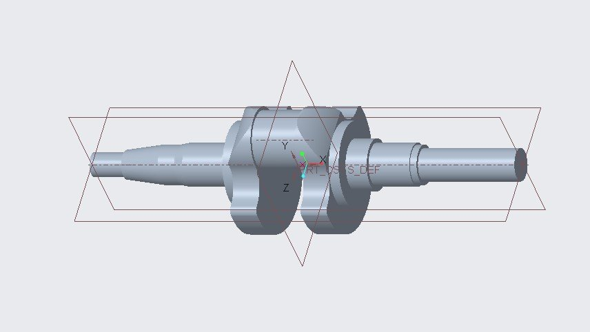
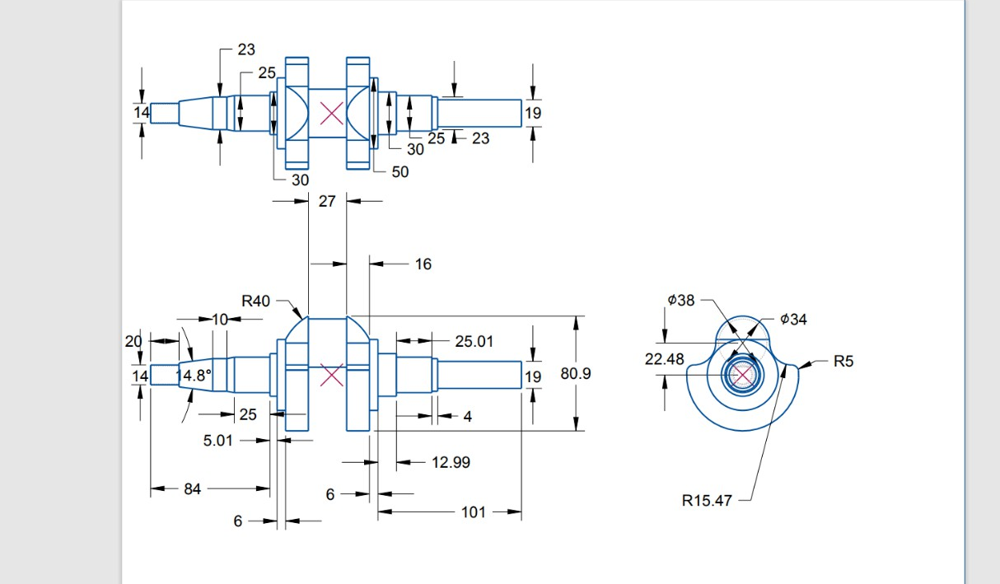
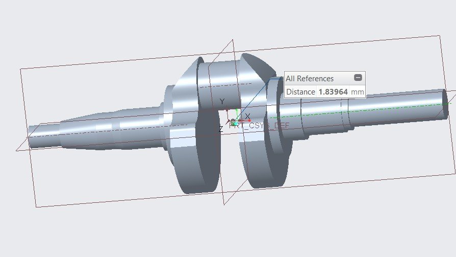
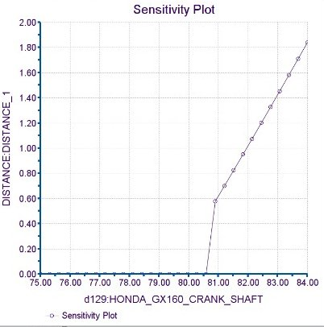
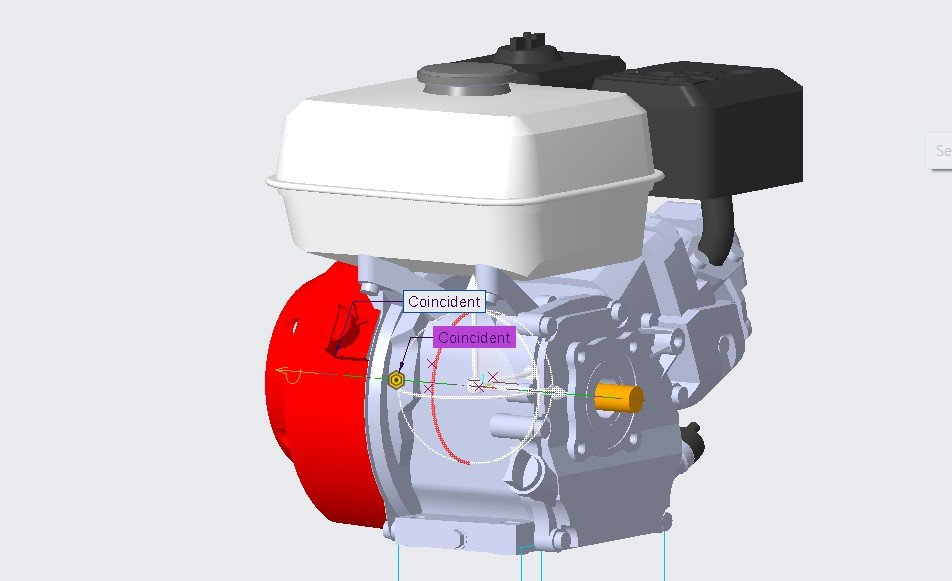
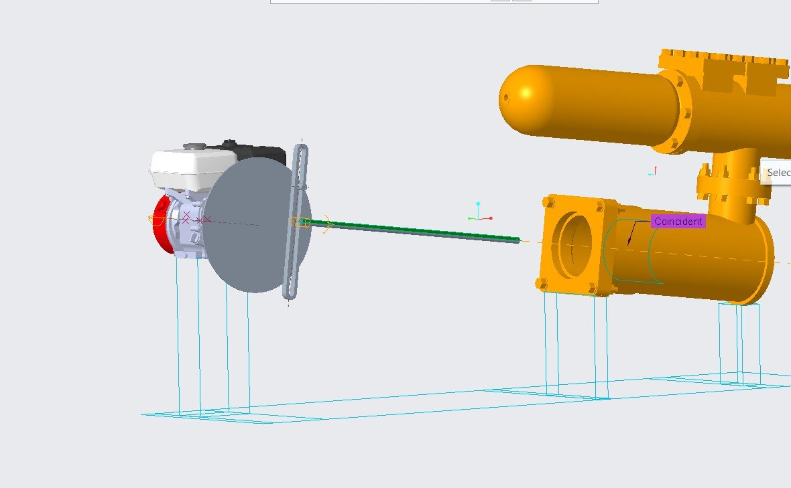
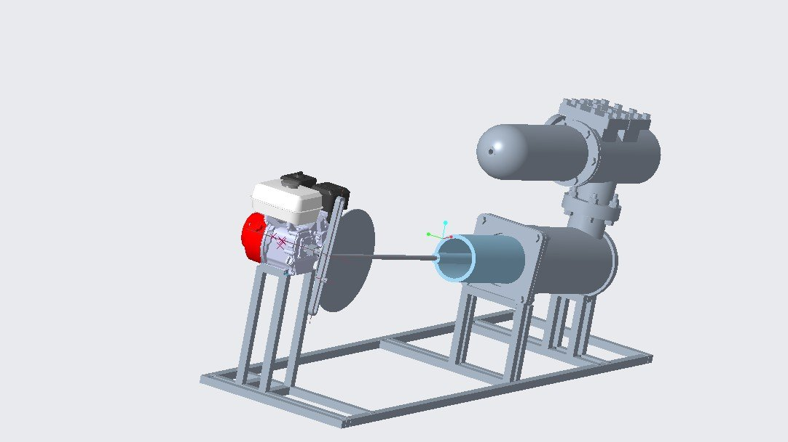

Projects / P.08 · Case study
Crankshaft to Complete Drive Assembly
A Honda GX-160 crankshaft rebuilt to a set of clearance constraints and balanced until its centre of gravity sat on the axis it turns about — then built into the machine it exists to drive: engine, coupling, scotch-yoke, feed pump, frame.
- Context
- CAD & mechanism design — B.Eng. Mechanical Engineering, Thapar Institute. Two linked projects: the crankshaft first, then the assembly built around it.
- Subject
- Honda GX-160 — the air-cooled four-stroke single that turns up under generators, water pumps and pressure washers
- Tools
- PTC Creo — modelling, sensitivity and feasibility analysis, AFX framework · the pump imported as a Parasolid from Onshape
- Result
- Centre-of-gravity offset driven from 1.84 mm to zero; complete engine-to-pump rig on a welded frame
The crankshaft, to constraints
The crankshaft is what makes an engine an engine: it turns the piston's straight-line shove into rotation. Remodelling one is not free sculpting — the brief fixed three clearances, and every feature had to be built around them. The connecting rod is 24 mm wide and needs 1.5 mm either side, so the throw gap is set. The outer flank surfaces of the flanges may sit no more than 59.5 mm apart. And the material of the flanges, which is what does the balancing, may extend no further than 42 mm from the axis.


1.84 mm off the axis
A crankshaft whose mass isn't centred on its axis of rotation throws a rotating force at the bearings once per revolution, and that force goes up with the square of the speed. It's the difference between an engine that runs and one that shakes itself apart. So the first real measurement was where the centre of gravity actually was: taken off the mass-properties tab, defined as a point, and measured against the axis. 1.83964 mm out, along Y.

Sensitivity first, then optimisation
Three dimensions could plausibly move the centre of gravity: the height of the counterweight, the radius of the centre connecting rod, and the radius of the arc on the crank's top face. Rather than guess, each was swept on its own to see what it actually did. The counterweight sweep is the one that matters — the offset is flat until about 81 mm and then climbs almost linearly, which says the counterweight is doing nearly all of the work and the other two are trim.

Then a feasibility study to confirm a solution existed inside the constraints, and three optimisation runs with the offset driven to zero, one parameter at a time:
| Step | Parameter driven | CG offset after (mm) | Removed |
|---|---|---|---|
| Start | — | 1.83964 | — |
| 1 | Height of counterweight | 0.577556 | 69% |
| 2 | Radius of centre connecting rod | 0.078934 | 27% |
| 3 | Radius of crank arc | 0.000000 | 4% |
What the crankshaft is for
A balanced crankshaft on its own is an exercise. The second half of the work was building the machine around it — and the constraint that made it interesting is that the pump on the other end was a real model from an earlier project, imported as a Parasolid, not something drawn to fit.

From the engine outward: a coupling joins the crankshaft to a driving shaft; the driving shaft turns a crank; the crank drives a scotch-yoke, which is the piece that converts rotation back into a straight line; and the yoke's driven shaft connects to the pump plunger, coincident with the barrel body so it slides where it's supposed to.

Last, the thing that holds it all at the same height: a support frame built with Creo's AFX framework tooling. Skeleton sketched first, then profiles run along it — rectangular tube for the base rails, square tube for the verticals — and joined with basic joints.

What I'd do differently
- This is static balance, and I called it balanced. Putting the centre of gravity on the axis removes the once-per-rev shaking force. It does nothing about the couple — two masses in different planes along the shaft can sit perfectly on the axis together and still rock the shaft end to end. Real crankshafts are balanced in two planes on a balancing machine, and nothing here shows whether this one would pass.
- 0.000000 mm is a solver output, not a target. Casting and machining tolerances will move the centre of gravity by more than steps 2 and 3 removed between them. Step 1 did 69% of the work and is the only one the process could actually hold; the last two chase a precision that disappears the moment anyone makes the part.
- The scotch-yoke is the wrong mechanism here. I chose it because it is easy to model. It gives pure sinusoidal motion — no dwell at either end and a side load on the plunger through every stroke, which is what a packed gland least wants. Feed pumps use a crank and connecting rod, and the reason is exactly this.
- The frame was never sized. Profiles were picked by eye from the AFX library. Nothing was checked against the engine's reaction torque, and nothing was checked for a natural frequency near running speed — on a rig whose whole purpose is to run a single-cylinder engine at constant rpm, that's the calculation you'd actually want.